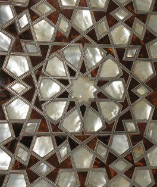

|
G |
Determine the Shape |
|
|
Input |
Standard Input |
|
|
Output |
Standard Output |
|

A toy
company recently found that toys like revolver, machine guns, fighting planes
are making children violent and destroying the peace of the world. The parents
also began to avoid these toys and inclined to educational toys. So they
decided to manufacture educational toys. One of these is a electric touch pad
on which children can put four points and the program will automatically join
the points to form a closed shape. Children will try to guess the shape and
when they press a button then it will automatically announce the shape. But
they are struggling to determine the shape and seek your help.
Your task is simple. You are given four points, no
three of them are collinear, you have to output the simple polygonal shape
formed by these points in the following order:
Square
Rectangle
Rhombus
Parallelogram
Trapezium
Ordinary Quadrilateral
For example if it is possible to form a square with
the four points you must output ‘Square’, if it is not
possible to form a square but possible to form a rectangle you must output ‘Rectangle’ and
so on.
Input starts with an integer T, the number of test cases (T≤50000). Each test case contains 4 lines. Each of the lines contains two space separated integers xi yi (-10000≤xi, yi≤ 10000) which are the coordinate values of a point.
For each set of input output one line in the format “Case k: s”. Here k is the case number starting from 1 and s is the shape as described above. See sample input output for more details.
|
Sample
Input |
Sample
Output |
|
6 0 0 2 0 2 2 0 2 0 0 3 0 3 2 0 2 0 0 8 4 5 0 3 4 0 0 2 0 3 2 1 2 0 0 5 0 4 3 1 3 0 0 5 0 4 3 1 4 |
Case 1: Square Case 2: Rectangle Case 3: Rhombus Case 4: Parallelogram Case 5: Trapezium Case 6: Ordinary Quadrilateral |
Note: If you have forgotten elementary
geometry, here is the definitions to remind you:
Square: All sides are of
equal size all angles are 90o
Rectangle: Opposite sides are of equal size and all angles are 90o
Rhombus: All sides are of equal size but no angle is 90o
Parallelogram: Opposite sides are of equal size but no angle is 90o
Trapezium: Any two opposite sides are parallel but the other two is not.
Simple Polygon: Polygon having no self intersecting edge.